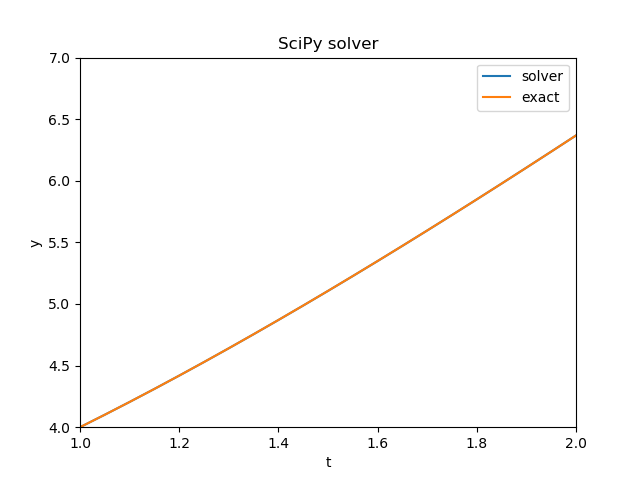
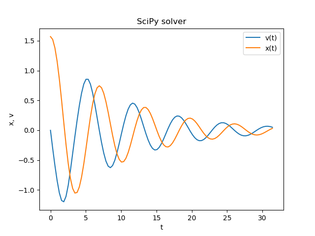
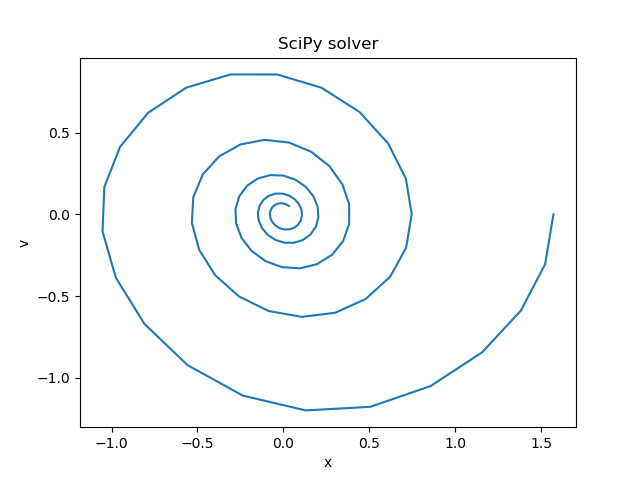

https://docs.scipy.org/doc/scipy/reference/tutorial/integrate.html
https://en.wikipedia.org/wiki/Harmonic_oscillator
https://en.wikipedia.org/wiki/Pendulum
The 'scipy.integrate' sub-package provides several integration techniques including an ordinary differential equation integrator.
import math
import numpy as np
import scipy.integrate as integrate # help(integrate)
import matplotlib.pyplot as plt
# Ordinary differential equations.
dy_vector/dt = f(t, y_vector)
Example: dy/dt = 3(1+t)-y, y(1) = 4, t in [1, 2].
y_exact = 3*t + np.exp(1-t)
t_a, t_b, y_a = 1.0, 2.0, 4.0
N = 20 # the number of intervals
t = np.linspace(t_a, t_b, N+1) # dtype=float, N+1 points
y0 = [y_a] # initial condition
t_span = [t_a, t_b]
def func(t, y): # y - a vector with one item
return [3.0 * (1.0 + t) - y[0]]
sol1 = integrate.solve_ivp(func, t_span, y0, t_eval=t)
plt.plot(sol1.t, sol1.y[0], label="solver")
plt.plot(t, y_exact, label="exact")

A simple harmonic oscillator: -k x = m x'' [a constant amplitude]
A damped harmonic oscillator: -k x -b x' = m x''
A simple gravity pendulum: -w2 sin(x) = x'' [a constant amplitude]
For small angles sin(x) ~ x.
A damped gravity pendulum:
x'' = -b x' - w2 six(x), t in [t_a, t_b].
Initial conditions x(t_a) = x_a, x'(t_a) = v_a.
Introducing a new variable:
x' = v,
v' = -b v - w2 six(x).
# |v| |v_a|
# y = |x|, y0 = |x_a|,
#
# |v'| |-b v - w2 sin(x)|
# dy/dt = |x'| = | v |
t_a, t_b, x_a, v_a = 0.0, 10*np.pi, 0.5*np.pi, 0.0
N = 100 # the number of intervals
t = np.linspace(t_a, t_b, N+1) # dtype=float, N+1 points
y0 = [v_a, x_a]
t_span = [t_a, t_b]
w2, b = 1.0, 0.2
def func(t, y): # y - a vector with two items
return [-b*y[0]-w2*np.sin(y[1]), y[0]]
sol1 = integrate.solve_ivp(func, t_span, y0, t_eval=t)
plt.plot(sol1.t, sol1.y[0], label="v(t)")
plt.plot(sol1.t, sol1.y[1], label="x(t)")

